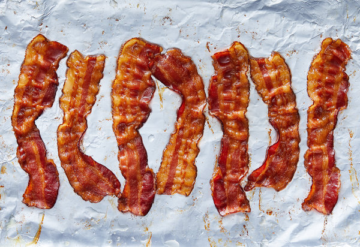

Oven Bacon

Description
This is a recipe for making large quantities of perfectly cooked bacon.
Great to use for sandiwch prep, serving large groups, or recipes where
you have limited stovetop space.
Ingredients
- Raw Bacon
- Oven-safe pan
- Tongs
- Aluminum Foil
Steps
- Preheat the oven to 350 degrees.
- Line your pan with foil.
- Lay your bacon on the foil, overlapping the fatty side with the meaty side of the next strip.
- Bake for 20-25 minutes.